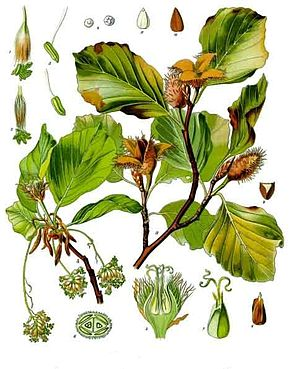
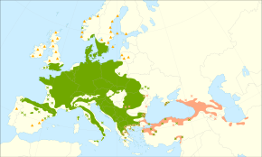
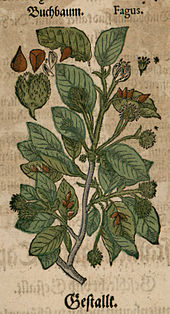

| Règne : | Plantae | |
| Sous-règne : | Tracheobionta | |
| Division : | Magnoliophyta |
LC : Préoccupation mineure Europe, France

|  |
|
 |
Le nom latin du hêtre, fāgus, a donné dans les langues romanes : fou en ancien français, faggio en italien, haya en espagnol, etc. Il est issu de l'indo-européen *bʰeh₂g-o- « hêtre »5,6,8, duquel procèdent le grec ancien phēgós « chêne » et le germanique *bōk- (cf. le néerlandais beuk, allemand Buche, anglais beech, suédois bok, tous au sens de « hêtre »). Les Germains ont utilisé des bâtonnets en bois de hêtre pour écrire les runes, d'où l'allemand Buchstabe « lettre », mot-à-mot « bâton de hêtre », et Buch « livre », même parenté entre l'anglais beech « hêtre » et book9 « livre » (cf. vieil anglais bōcstæf « lettre, caractère écrit » > anglais bookstaff, -stave, plutôt rare et archaïque), le néerlandais beuk « hêtre » et boek « livre ». Le nom vernaculaire du hêtre est issu du vieux bas francique *haitr (non attesté) ou directement du vieux néerlandais hēster, heister (d'où aussi le néerlandais heester « arbuste »), composé d'un radical germanique *χais- « buisson d'arbustes, fourré » (conservé dans la toponymie10 : Hees, l'un dans l'Utrecht, l'autre dans le Brabant-du-Nord) et du suffixe -ter qui est la forme atone de *dra « arbre » provenant d'une forme *trewam (qui a donné aussi en anglais le mot tree « arbre »11 ou en allemand la syllabe finale -der du mot Holunder « sureau »). Par antonomases successives, il a désigné un buisson, puis probablement une clôture de branches de hêtre puis le tronc et l'arbre lui-même : cette évolution est attestée par la racine *hais romanisée en *hasia qui se retrouve aussi dans le vieux mot hazier ou l'ancien français haise qui désigne une « barrière de branches entrecroisées » ou haiset une « petite porte rustique en branches de hêtre »12. Albert Dauzat considère que le francique *haistr ne supplante l’ancien français fou qui est le terme le plus fréquemment utilisé au Moyen Âge mais abandonné par la suite, à cause de son homonymie avec le terme fou « personne atteinte de folie », puis fayard (franco-provençal) ou fouteau (Normand foutel), termes dérivés à partir de l'étymon latin fagus. Hêtre apparaît dans un texte de 1210 (cartulaire de Saint-George)13, sous la forme latinisée hestrum, désignant « un petit hêtre » : les jeunes troncs étaient coupés pour servir de balai, de fouet ou de protection14. Le terme hêtre a fini par désigner l'arbre adulte (ce sens est attesté dès 1301) et, par métonymie, le bois de cet arbre15. L’ancien français fou puis fayard ou fouteau coexistent avec hestre jusqu'au xviie siècle et sont encore employés dans le français régional.
Appellations et toponymes :Le « hêtre », sans autre précision, est bien employé généralement pour désigner l'espèce Fagus sylvatica. Pour le distinguer le cas échéant des autres représentants du genre Fagus, on peut alors préciser qu'il s'agit du « Hêtre commun »18. L'appellation « hêtre européen » est en revanche un anglicisme, une traduction littérale de European beech. On trouve, selon les régions19, de nombreuses dénominations locales dérivées de son nom latin fagus : fou, foutel, fouteau, faye, foyard, fau, faon, fayard (mot francoprovençal), fayaud, favinier, faou, etc. Outre un usage répandu dans une grande partie sud-est de la France, ainsi qu'en Suisse romande20, l'appellation fayard (ou sa variante foyard) est également employée par les forestiers lors des inventaires ou des martelages, lorsqu'il faut désigner à voix haute l'espèce, à la place du mot hêtre, trop peu sonore. La racine norroise bóki se retrouve dans les toponymes normands Bouquelon, la Bouquelonde (littéralement « hêtraie ». cf. norvégien bøkelund « hêtraie ») et Bouquetot, très nombreux au nord-est de la Normandie où cet arbre est plus commun qu'à l'ouest. Il est cependant en concurrence avec les types romans que l'on trouve partout dans la France du nord : Fy ; Fay, c'est-à-dire « hêtraie ». On y trouve également la variante la Fontelaye, la Foutelaye, dérivé de foutel « hêtre ». Dans les langues slaves, on trouve notamment le mot buk en tchèque pour désigner le hêtre, qui aurait donné son nom à la Bucovine, littéralement « hêtraie » ou « pays des hêtres ». La langue occitane a fourni un autre type toponymique pour désigner une hêtraie, il s'agit de Fage, d'où Lafage ou encore en occitan gascon Lahage (Haute-Garonne). Ces toponymes reposent sur le nom du hêtre en occitan : ancien occitan *fag (languedocien fau) dérivés en -ia, d'où la terminaison francisée -e. Une forêt où le hêtre domine, est une hêtraie (en wallon : faweux). |
 |
Le Hêtre commun est un grand arbre. Sur les sols de bonne fertilité, il peut s'élever facilement jusqu'à 30 à 35 m de hauteur et la circonférence de son tronc peut couramment atteindre 3,50 m chez des hêtres centenaires. Des sujets exceptionnels ont été mesurés jusqu'à 45,5 m de hauteur et on a répertorié certains troncs dont le tour dépasse les 6 m24. Inversement, lorsqu'il croît en lisière haute des forêts de montagne et que de plus il est régulièrement brouté par le bétail ou par les cervidés, il peut alors rester prostré à hauteur d'homme. La silhouette varie selon le traitement forestier et l'habitat. En futaie, le hêtre développe un tronc long et mince, dégagé de ses branches jusqu'à 15 ou 20 m de hauteur et le houppier est étroit avec des branches redressées à 60°25. En situation isolée, le fût est très court et le houppier large et haut, aux branches étalées, pouvant couvrir 600 m2. Il rejette difficilement de souche : parfois à l'étage montagnard, pratiquement jamais à l'étage collinéen.
Parmi les arbres d'Europe tempérée, le Hêtre commun se reconnaît facilement à son écorce mince et lisse qui persiste ainsi tout au long de la vie de l'arbre. La surface du tronc est régulière, contrairement au Charme (Carpinus betulus) dont l'écorce est également lisse mais la surface cannelée. Elle devient légèrement rugueuse (présence de petites fissures) à la base du tronc chez les vieux sujets. Très exceptionnellement, certains individus décrits comme Fagus sylvatica f. quercoides peuvent développer une écorce crevassée — un rhytidome — dont la survenue semble d'origine traumatique car non génétiquement transmissible. Le Hêtre a en effet un seul phellogène qui fonctionne pendant toute la durée de vie de l'arbre alors que chez la plupart des autres espèces (et au niveau de la base du tronc des hêtres âgés), ce sont plusieurs phellogènes qui se succèdent au cours de leur vie et sont à l'origine d'un rhytidome27. L'écorce présente une couleur qui varie du gris argenté (sujet jeune) au gris noirâtre ou gris-vert (arbre adulte), mais elle apparaît souvent recouverte d'une fine croûte de lichens qui donnent au tronc une teinte gris argenté caractéristique. Sous climat humide, la végétation épiphyte du tronc et des branches peut être plus exubérante, et se composer de lichens fruticuleux ou foliacés, de mousses, de petites fougères… Dans certaines régions, ou sous l'effet de la pollution atmosphérique, les lichens peuvent au contraire être remplacés par une pellicule verte d'algues microscopiques (comme Pleurococcus vulgaris). La finesse de son écorce est due à une seule assise génératrice externe (le phellogène) pour toute la vie de l'arbre. Cette assise, « ainsi que le phelloderme auquel elle donne naissance, gardent la propriété de pouvoir se diviser radialement, permettant à ces tissus d'épouser parfaitement le tronc lorsque celui-ci augmente de circonférence du fait de la production de xylème et de liber. En revanche, les cellules issues du côté externe de cette même assise formant le suber, ont perdu cette propriété. Ne pouvant plus s'accroître tangentiellement, cette couche de cellules fortement tendue finit par se fissurer ; les crevasses peu profondes (0,25 mm) ainsi formées, sont cependant à peine visibles28 ». La fine écorce rend l'arbre particulièrement fragile aux blessures de toutes sortes. Des gravures au couteau de poche peuvent blesser le liber et freiner ou stopper la croissance de toute une partie de l’arbre29. Toujours en raison de cette finesse, l'écorce peut être affectée par de nombreuses maladies et dégâts.